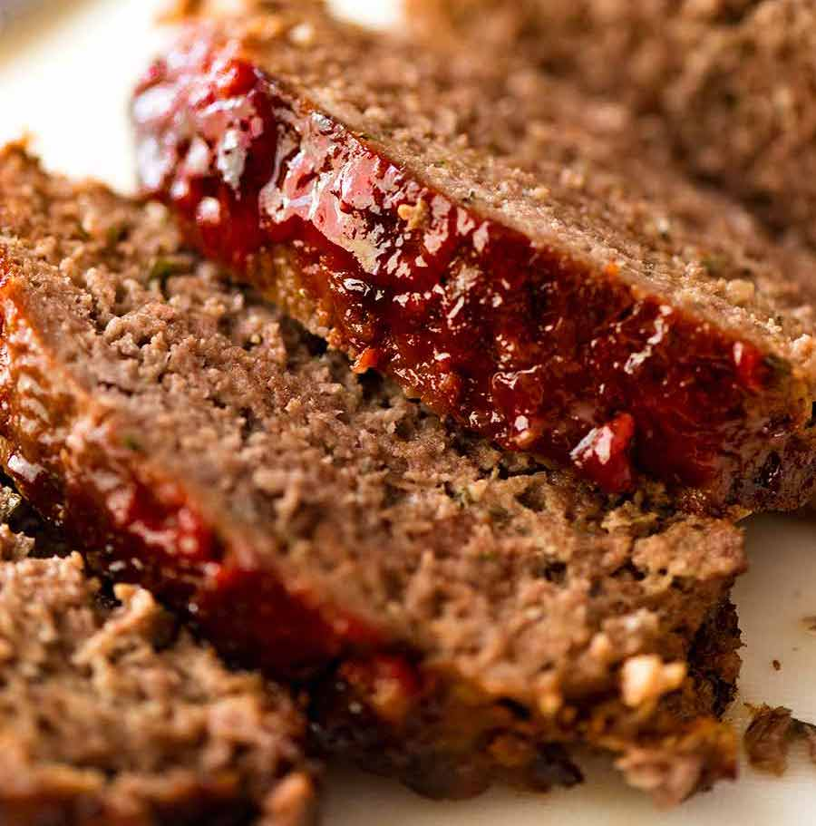

Meatloaf

Description
Everybody loves good ol' Granny's homemade meatloaf recipe. Can't find it since she passed? Well, you're in luck! Juicy, savory, and just like she made it, this recipe is sure to flood your eyes with all those treasured childhood memories.
Prep is easy, it only takes basic ingredients, and it's a relatively quick cook. Your whole family will be salivating throughout the mere hour it takes to make this dish!
Ingredients
- 1 lb. ground beef
- 1/2 cup breadcrumbs
- 1 can tomato sauce
- 1/2 white onion
- 1 tbs mustard
- 2 tbs brown sugar
- 1 tsp salt
- 1 egg
Steps
- Preheat the oven to 375°F.
- Chop the onion into small, diced pieces.
- Mix the raw ground beef with the breadcrumbs, egg, chopped onions, salt, and 2/3 of a can of tomato sauce.
- Once thoroughly mixed, shape the raw meat-xture into a rough loaf, then place in a baking pan.
- Place the raw meatloaf into the oven for 45 minutes.
- While the meatloaf bakes, get out a small sauce pan. Mix the brown sugar, mustard, and remaining tomato sauce together in the sauce pan, then heat until it simmers.
- When 10 minutes remain on the meatloaf timer, pour the sauce from the sauce pan onto the meatloaf and let it continue to bake.
- When the timer goes off, ensure that the meatloaf is at least 168°F in the middle. If not, continue baking in 5 minute increments until it is.
- Serve fresh with veggies and potatoes for a balanced meal!